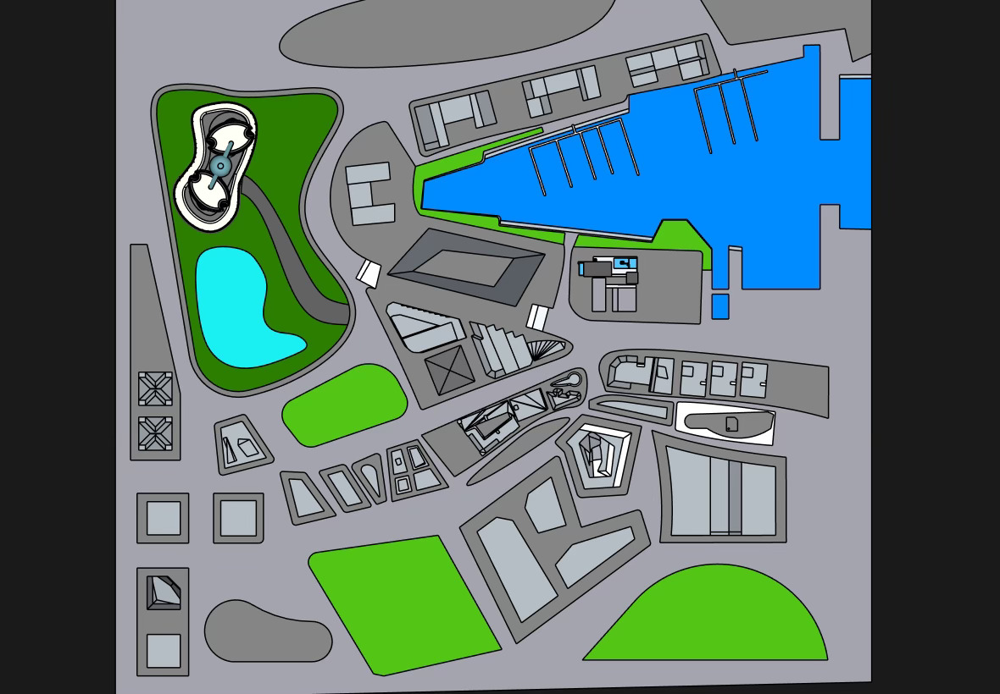
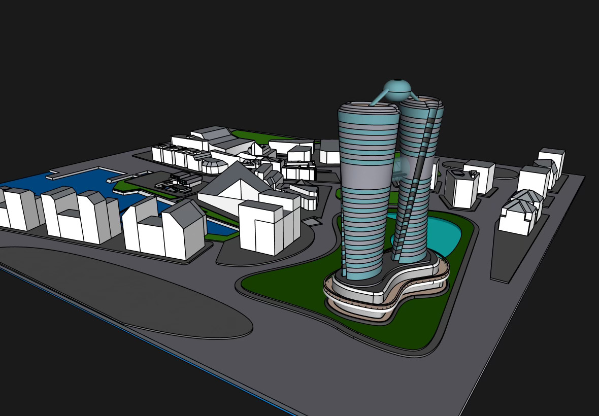

Le centre CT ZEN vous
ouvre ses portes
C'est avec un immense plaisir que notre équipe vous présente son premier domaine habitable : La CT ZEN.
C'est dans cette fabuleuse ville d'Annecy qu'émergera cet immeuble de plus de 100 logements son objectif est simple :
Parvenir à loger ses résidents en leur apportant confort, modernité, luxe et sécurité.
Tout cela dans un environnement éco-responsable à 100%.
C'est dans un lycée en Haute-Savoie que ce projet à vu le jour. Après avoir été confié à nos architecte, la CT ZEN est en mesure d'acceuillir
tous ses résident.
Et sans aucun danger.
Comment ? Voyons cela ! Préparez vous au futur...
C'est grâce à
La fusion que la CT ZEN dispose d'une quantité d'énérgie preque illimité et renouvelable. Cette energie
astronomique et futuriste est mieux expliquée sur
->la page de nos engagements.<-
Les rejets de dihydrogène dû à la formation de cet énergie sont favorables à la prolifération de la nature.
Et ce ne sont pas les
nombreux parcs et lacs qui peuple la résidence
qui vous dirons le contraire.
La CT Zen est disposée en 2 immeubles. Ces derniers sont logé sur le centre CT ZEN. vous y trouverez à l'intérieur un centre commercial pour
parvenir à vos besoins, ainsi que des loisirs tel que Spa et piscine. Ces derniers chauffés grâce à notre Fusion.


C'est grâce à ce même centre commercial que notre CT ZEN sont si résistant aux séismes. garantissant une protection maximale.
Par ailleurs. C'est cette forme particulière en spirale retravaillée qui permet à la tour un aérodynamisme suffisant.
Pour une description plus imagée du projet, téléchargez notre Powerpoint